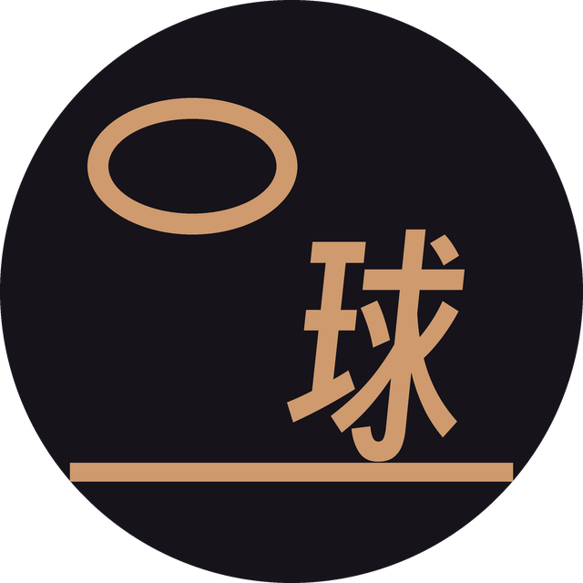
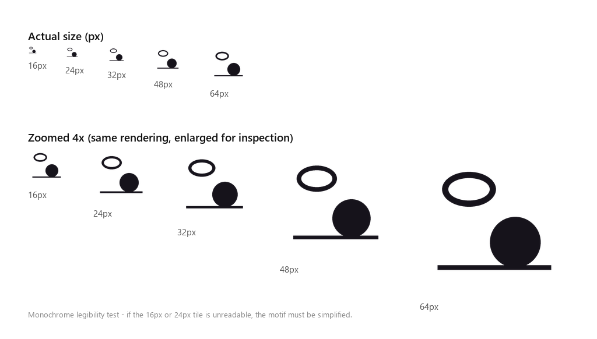

去球吧QUQIBA · BRAND MARK
标志从一张真实照片里量出来，不是画出来的。照片里有两件事：一颗落在木地板上的球，和远处一个失焦的篮筐。整个标志只保留这两件东西和它们脚下的那条线。
01 主形象PRIMARY MARK
环代表篮筐，字代表球，横线代表地板。
「球」字不是贴上去的名字，它就是那颗球——位置、体量、落地关系全部照搬照片。
缩到 48px，字会糊，但轮廓仍是一个落在环下的实心块，读起来还是「球在筐下」。
「球」字不是贴上去的名字，它就是那颗球——位置、体量、落地关系全部照搬照片。
缩到 48px，字会糊，但轮廓仍是一个落在环下的实心块，读起来还是「球在筐下」。
02 参考视觉与实测DERIVATION
下表每一项都能在参考图里量出来，不是感觉。
| 空间事实 | 实测值 | 进入标志的部分 |
|---|---|---|
| 两主体位置 | 球心 +0.18W / +0.17H，圈心 −0.21W / −0.20H | 近乎绕画心镜像 → 球右下、圈左上的斜线 |
| 球体尺度 | 直径 0.36W（画面宽） | 球/字占画布 40 单位 |
| 篮圈形状 | 外接 203×132px = 1.54:1 扁椭圆 | 环的 rx:ry 严格照此比例 |
| 地面 | 暖木色占画面下三分之一，上部近黑 | 一条与球底相切的横线 |
| 景深（球实、圈虚） | — | 丢弃：模糊画不出来，硬做就是滤镜 |
| 篮网垂直细线 | 约 10 根，向下收拢 | 丢弃：24px 下必然粘连成块 |
| 球面接缝 | 两弧交于一点 | 丢弃：同上，且与字冲突 |
03 三个版本VARIANTS
04 两个头像AVATAR
公众号和头条号共用同一张，两个平台都是圆形裁切，没有差异。木底那版字更清楚，深底那版在白色信息流里更显眼。
木底 · 推荐黑字压木色，内部对比 7.7:1。32px 时还能看出是「球」，深底那版此时已糊成一块。

深底 · 备选白底列表里更跳，但 32px 时字会糊进背景。适合头像旁边不放名字的场景。
05 缩到多小还成立SCALE TEST

24px 起环与球仍可分辨，16px 只剩球的轮廓——favicon 用纯色块即可，不必再简化。
06 色彩COLOR
#CE9A6E · 球场木
#16131B · 墨黑
#984B41 · 砖橙
| 动作 | 公众号 | 头条号 |
|---|---|---|
| 头像 | avatar-640.png | 同左 |
| 正文页眉 | lockup.png | lockup.png |
| 封面角标 | mark-reverse-512.png | — |
砖橙刻意不进标志。它在木色底上只有 2.4:1，放进去只会让 24px 版本多一块糊掉的色。留作头条封面横幅用。
07 规矩USAGE
- 净空 = 3.2 单位（等于地线线宽），四周不得压字、压图、压边框。
- 最小尺寸 24px。低于此只能用单色版，且不带头像底板。
- 禁止旋转、加阴影、加渐变、改环的扁度（1.54:1 是量出来的，不是随手定的）。
- 禁止把「球」字换成其他字——它替代的是球，不是标题。
- 字号：字标用得意黑（SIL OFL 1.1，可商用），不要换成微软雅黑——Windows 字体授权不覆盖标志用途。